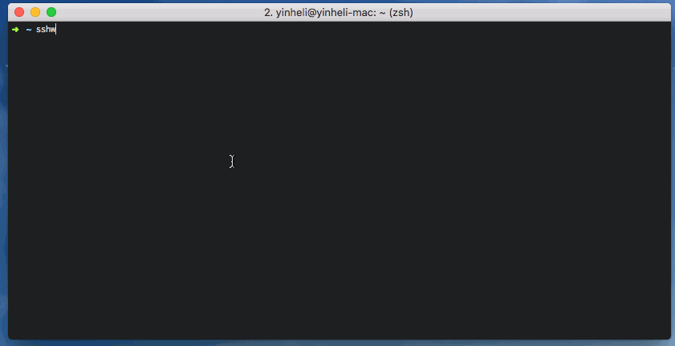

少记命令
使用别名直连，或从交互列表中选择目标，不再重复输入完整的 SSH 参数。
SSH CLIENT WRAPPER
用 YAML 维护主机信息，通过可搜索的终端菜单或本地 Web 界面，管理分组并打开 SSH 会话。
go install github.com/yinheli/sshw/cmd/sshw@latest
$ sshw -search prod
select host
› production / api-1
root@10.20.0.11:2222
$ sshw -config
✓ config UI opened in browser
WHY SSHW
sshw 读取 YAML 或 ~/.ssh/config，自动处理用户、端口、密钥、密码、SSH Agent、跳板机和登录后命令。

使用别名直连，或从交互列表中选择目标，不再重复输入完整的 SSH 参数。
按团队、环境或网段建立嵌套分组，大量 Server 也能保持清晰。
支持密码、私钥、Passphrase、SSH Agent 和 Keyboard Interactive。
Config Web 默认只监听本机地址，保存时使用安全的原子替换流程。
INSTALL
推荐直接下载 Release。已安装 Go 的用户也可以使用一条命令安装最新版。
下载适合操作系统和 CPU 架构的压缩包，将二进制放入 PATH。
go install github.com/yinheli/sshw/cmd/sshw@latestgit clone https://github.com/cooker/sshw.git
cd sshw
./build.sh产物位于 dist/<os>-<arch>/sshw。
QUICK START
先创建配置，再添加 Server，最后运行 sshw。
sshw 会按顺序查找用户目录和当前目录中的 .sshw、.sshw.yml 与 .sshw.yaml。
touch ~/.sshw.yamlname 用于展示，alias 用于快捷连接。User 和 Port 可以省略。
- name: development
alias: dev
host: 192.168.8.35
user: appuser
port: 22
keypath: ~/.ssh/id_rsa不带参数时打开交互选择器。知道 Alias 时，可以直接连接。
sshw
交互选择
sshw dev
Alias 直连
INTERACTIVE SEARCH
搜索覆盖 Name、Alias、User、Host 和 Port，也会递归查找嵌套分组中的 Server。
$ sshw -search prod
select host: prod_
› production / api
deploy@10.0.12.8:2222
production / worker
Backspace 可删除初始关键词并恢复结果
sshw -search
不带关键词，打开全部 Server 的交互搜索。
sshw -search prod
带初始关键词进入搜索，仍可继续输入或删除。
sshw -q prod
-q 是 -search 的短命令。
sshw -s
从本地 ~/.ssh/config 构建选择器。
CONFIG WEB
运行命令后会自动打开本地页面。默认只监听 127.0.0.1，终端同时显示访问地址。
sshw -config
创建、重命名、移动或删除嵌套分组，并查看每个分组中的 Server 数量。
按名称、Alias、Host、User、Port 或完整分组路径过滤 Server。
新增、编辑、复制、移动和删除 Server，配置认证、Jump Host 与回调命令。
支持英语、简体中文、日语、韩语和越南语，并会记住本机选择。
界面显示未保存状态。写入时使用同目录临时文件和原子替换，并将新配置权限设置为 0600。
CONFIG REFERENCE
Server 是普通节点；Group 是带有 children 数组的节点。
| 字段 | 作用 | 默认值 |
|---|---|---|
name | 选择器中的显示名称 | — |
alias | sshw <alias> 快捷连接 | — |
host | 主机名或 IP 地址 | — |
user | SSH 用户名 | root |
port | SSH 端口 | 22 |
keypath | 私钥路径，支持 ~ | — |
agentpath | SSH Agent Socket 路径 | — |
jump | Jump Host 定义 | — |
children | 嵌套 Server 或 Group | — |
callback-shells | 登录后发送的命令 | — |
~/.sshw~/.sshw.yml~/.sshw.yaml./.sshw./.sshw.yml./.sshw.yaml找到第一个存在的文件后停止查找。
- name: production
children:
- name: api-1
alias: api
user: deploy
host: 10.20.0.11
- name: worker-1
user: deploy
host: 10.20.0.12- name: app via bastion
alias: app
user: appuser
host: 192.168.8.35
keypath: ~/.ssh/id_rsa
jump:
- user: ops
host: bastion.example.com
port: 2222
keypath: ~/.ssh/bastion_rsa- name: dev with startup commands
alias: dev
host: 192.168.8.35
callback-shells:
- { cmd: "cd /srv/app" }
- { delay: 1500, cmd: "docker ps" }BUILD
build.sh 会注入版本信息，并把不同平台的产物放入独立目录。
# 当前平台
./build.sh
# Linux AMD64
GOOS=linux GOARCH=amd64 VERSION=dev ./build.sh
# 自定义输出目录
OUTPUT_DIR=/tmp/sshw-build ./build.shFAQ & SAFETY
可以。新版保持现有 YAML 字段和结构兼容，Config Web 只是提供另一种编辑方式。
默认不会。服务监听 127.0.0.1:7899，仅本机可访问。不要随意绑定公开网络地址。
不需要。可以继续输入或按 Backspace 回退，结果会即时恢复。
不要提交真实密码、Passphrase、私钥或生产主机信息。优先使用私钥或 SSH Agent。
READY TO CONNECT?
安装 sshw，写入一条配置，然后运行 sshw。